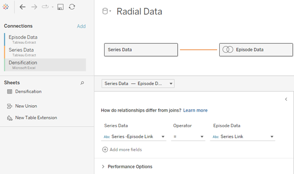
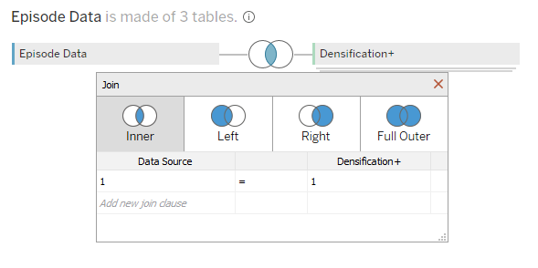
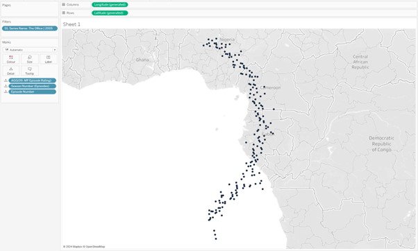
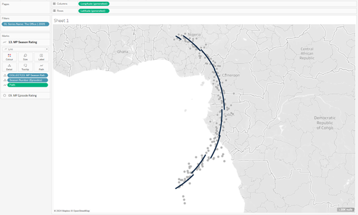
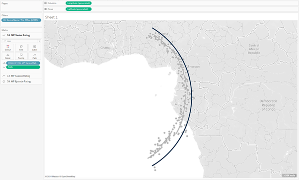
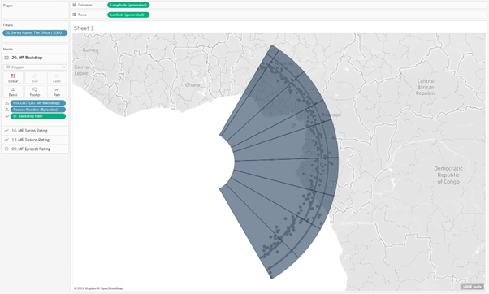
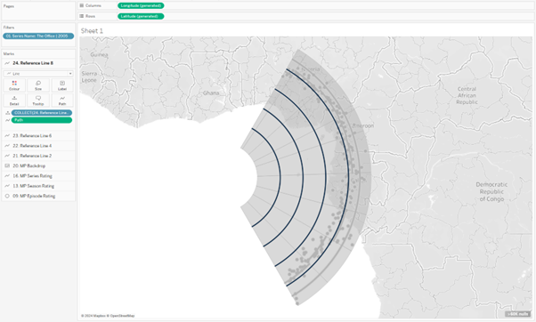
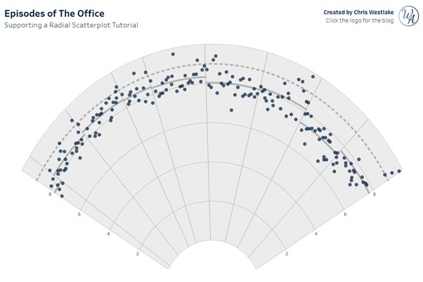

Last week Tableau released the Data+TV challenge that I was fortunate enough to get a preview of for the Iron Viz final. This release means 2 things. The first is that there are about to be a tonne of incredible TV related vizzes on Tableau Public from the Tableau Community. The other is that I can finally release the tutorial that many people have been asking for – how did I create the radial scatterplot that formed such a huge part of my Iron Viz final dashboard?
For this blog, I’ve created a secondary viz that is just the radial scatterplot. Feel free to download the and follow along as you read. Enjoy!
Data Source
For the data source, we are going to use a subset of data from the Data+TV starter pack. We can create a relationship between the Series data and the Episodes data using the Series-Episode Link and Series Link fields. I’ve made one small addition to the Episodes data, using Tableau Prep. This step adds a field “Episode number in series” which will enable us to order the episodes and assign each episode dot an appropriate angle. The easiest way to do this in Tableau would normally be through an Index calculation, but this can’t be done in conjunction with Map Layers. My amended extract with this additional field in the resources folder only contains The Office for file size reasons. If you want to recreate this for other shows, you can download my IronViz final dashboard to get the data for the top 250 most voted for shows!
As we are looking to build a radial, we will also need to densify our data. This simply means to add “dummy” points between each of the actual points in order to plot the smooth curves. Double click on the Episodes table and create a join between this table and a densification file. The densification file I have used is made up of one column, Path, which lists numbers from 0 to 180 in steps of 0.05. The join we are going to use is an inner join with a calculation in both tables of just the number 1.
This will give us all the data necessary for each of the radial layers apart from the backdrop. For this we will need double the densification so that we can create an arc going along the top of the chart, and then connect that to another arc going along the bottom. For this we can just union another copy of the densification data to itself.
That is all the data we will need, and the resulting data source look something like the images below:


Workbook Set Up
Before we start on any of the calculations or building the view, we are going to create 3 parameters and a few fields.
When looking at the radial chart, you will notice that it is not a full semi-circle. We are going to create two parameters that control the start and end angles of the radial. This will make it easier in the future if we wish to change this aspect of the design. We are going to call these parameters Max Angle and Min Angle. Keep the data type as float, and set values of 150 and 30 respectively. The other parameter controls the distance of the radial from the centre. We’ll give this a value of 3 and call it Inner Circle Radius.
The field that we’ll create will help us find unique Series names. Sometimes multiple series will use the same name, so by appending the Starting Year to this we create a way to differentiate between them. You can do this in different ways, but this will suffice for the purposes of this tutorial.
//01. Series Name
[Series Title] + " | " + [Starting Year]
Add this to the filter and pick a show to use as your initial build. I’ll be using The Office | 2005.
The next calculation tells us how many shows episodes there are in each series.
//02. Number of Episodes
{ FIXED [Series Title],[Starting Year] : COUNTD([Season Number (Episodes)]+STR([Episode Number])) }
We can use this field to divide the space on our radial evenly between each episode (03. Angle per episode), assigning an angle to each episode (04. Angle of episode).
//03. Angle per episode
(1/(AVG([02. Number of Episodes])+1)*([Max Angle]-[Min Angle]))
//04. Angle of episode
[Min Angle] + ( MIN([Episode number in series]) * [03. Angle per episode] )
The last of our preliminary calculations determine the boundaries for each season. When we add the season average lines and the backdrop we want these to finish midway between the last episode of one season and the first episode of the next. These calculations find the angles of those midway points.
//05. First episode
IF [Episode Number] = {FIXED [Series Title],[Season Number (Episodes)] : MIN([Episode Number])}
THEN { FIXED [Series Title],[Episode number in series] : [04. Angle of episode]-([03. Angle per episode]/2) }
END
//06. Last episode
IF [Episode Number] = {FIXED [Series Title],[Season Number (Episodes)] : max([Episode Number])}
THEN { FIXED [Series Title],[Episode number in series] : [04. Angle of episode]+([03. Angle per episode]/2) }
END
The Episode Dots
There are several layers that we are going to employ here to build up the chart, each using some basic trigonometry to generate the coordinates for each point on our Tableau canvas. Let’s start with the dots that represent each episode, as these are possibly the most simple to understand.
For our X and Y coordinates, we will need two bits of information – the radius, and an angle. For the radius we will use the episode rating plus our Inner Circle Radius parameter. We also need to assign an angle to each episode, which we can do with 04. Angle of episode defined above.
Taking this, we can create our X and Y coordinates, before joining them together with a Makepoint calculation that lets us plot the points on a map.
//07. Episode Rating X
([P Inner Circle Radius] + AVG([IMDB Rating (Episode)])) * SIN(RADIANS([04. Angle of episode]))
//08. Episode Rating Y
([P Inner Circle Radius] + AVG([IMDB Rating (Episode)])) * COS(RADIANS([04. Angle of episode]))
//09. MP Episode Rating
MAKEPOINT([08. Episode Rating Y],[07. Episode Rating X])
Double clicking on the 09. MP Episode Rating field that we just created will add it to the view with a map background. We can then also add Season Number and Episode Number to breakdown the data to the desired level. You should have something that looks like this:

You may notice that in our MakePoint calculation we have the X and Y coordinates the wrong way round, and our chart appears to be sideways. This enables us to invert the Latitude and Longitude pills later to give us more control of the axis ranges. We’ll come onto that a little later in the tutorial, once we have added all of the layers to the view.
The Average Lines
The next step is to add the season average lines, for which we will need to know the average rating within each season.
//10. Season Rating
{ FIXED [Series Title],[Season Number (Episodes)] : AVG([IMDB Rating (Episode)]) }
We’ll be using the Path field from our Densification file for the angles, and only want to utilise Path values between the points where each season starts and ends. Using the calculations that we created before to identify the first and last episodes of each season will enable us to do this. The resulting calculations are similar to what we had before, but with an added condition. The restriction of Path needing to be between the angles of the first and last episode means that we will only see the line for the section of the curve that interests us. Below are the calculations used to get the values for X and Y coordinates, and map them together using Makepoint.
//11. Season Rating X
IF [Path] <= {FIXED [Series Title],[Season Number (Episodes)]: MAX([06. Last episode])} AND [Path] >= {FIXED [Series Title],[Season Number (Episodes)]: MAX([05. First episode])} THEN
([P Inner Circle Radius] + [10. Season Rating]) * SIN(RADIANS([Path]))
END
//12. Season Rating Y
IF [Path] <= {FIXED[Series Title],[Season Number (Episodes)]: MAX([06. Last episode])} AND[Path] >= {FIXED [Series Title],[Season Number (Episodes)]: MAX([05. First episode])} THEN
([P Inner Circle Radius] + [10. Season Rating]) * COS(RADIANS([Path]))
END
//13. MP Season Rating
MAKEPOINT([12. Season Rating Y],[11. Season Rating X])
We add this to the view by dragging the field to the top left corner of the map and dropping it over the Add a Marks Layer pop-up that appears. We add the season number, change the mark type to line, and add Path to the path section of the marks card. You should now see something like this:

Adding the series average rating is a nearly identical process. We create our X and Y coordinates, using the same logic as before to restrict the length of the line, and combine them with the MakePoint function. The only difference here is that for our radius we are using the series rating rather than our calculated season average rating.
//14. Series Rating X
IF [Path] <= {FIXED [Series Title],[Season Number (Episodes)]: MAX([06. Last episode])} AND [Path] >= {FIXED [Series Title],[Season Number (Episodes)]: MAX([05. First episode])} THEN
([P Inner Circle Radius] + [IMDB Rating (Series)]) * SIN(RADIANS([Path]))
END
//15. Series Rating Y
IF [Path] <= {FIXED [Series Title],[Season Number (Episodes)]: MAX([06. Last episode])} AND [Path] >= {FIXED [Series Title],[Season Number (Episodes)]: MAX([05. First episode])} THEN
([P Inner Circle Radius] + [IMDB Rating (Series)]) * COS(RADIANS([Path]))
END
//16. MP Series Rating
MAKEPOINT([15. Series Rating Y],[14. Series Rating X])
This can also be added to the view, and gives us the final data driven marks in our view.

The Backdrop and Reference Lines
What remains is to add reference lines. We can’t use Tableau’s built in grid (or even reference) line capability because of the curved nature of our chart, so we have to be a little creative. Let’s start with the backdrop that gives our dots and lines a solid surface to rest on.
Remember earlier when we duplicated our densification data? This is where that comes in handy. We are going to use polygons to draw the backdrop, traversing across the top of our radial before coming back towards the centre and going back the other way to where we started. To do this we need a modified Path field that will allow us to go both forwards and backwards through our path values. I talked about this method in a recent blog post which I recommend looking at if you are confused!
//17. Backdrop Path
IF [Table Name] = "Densification" THEN [Path]
ELSE 1/[Path]
END
Once we have our path, we are back to a similar situation as with the previous steps. Create the X and Y coordinates, join them with the makepoint function, and add to the view as a new layer. There is an added section to the X and Y calculations here to account for our increased path. For one set of dots we want to be at the outside of our radial, but on the inside for the other. This is achieved by adding 10 to the Inner Circle Radius parameter for one set, and using just the Inner Circle Radius for the other.
//18. Backdrop X
IF [Path] <= {FIXED [Series Title],[Season Number (Episodes)]: MAX([06. Last episode])} AND [Path] >= {FIXED [Series Title],[Season Number (Episodes)]: MAX([05. First episode])} THEN
IF [Table Name] = 'Densification' THEN
(10+[P Inner Circle Radius]) * SIN(RADIANS([Path]))
ELSEIF [Table Name] = 'Sheet1' THEN
([P Inner Circle Radius]) * SIN(RADIANS([Path]))
END
END
//19. Backdrop Y
IF [Path] <= {FIXED [Series Title],[Season Number (Episodes)]: MAX([06. Last episode])} AND [Path] >= {FIXED [Series Title],[Season Number (Episodes)]: MAX([05. First episode])} THEN
IF [Table Name] = 'Densification' THEN
(10+[P Inner Circle Radius]) * COS(RADIANS([Path]))
ELSEIF [Table Name] = 'Sheet1' THEN
([P Inner Circle Radius]) * COS(RADIANS([Path]))
END
END
//20. MP Backdrop
MAKEPOINT([19. Backdrop Y],[18. Backdrop X])
Adding this to the view as before, we can change the mark to a polygon and add Backdrop Path to path and Season Number to detail.

It is also useful to add reference lines to this view. It’s hard to mentally calculate how far from the centre each circle is, and even harder to keep track of trends as you move around the circle. I’ve used a few calculations here to plot lines at intervals of 2 on our chart. This simply uses the Inner Circle Radius we set before and adds the referenced value to it.
//21. Reference Line 2
IF [Path] <= {FIXED [Series Title],[Season Number (Episodes)]: MAX([06. Last episode])} AND [Path] >= {FIXED [Series Title],[Season Number (Episodes)]: MAX([05. First episode])} THEN
MAKEPOINT(
([P Inner Circle Radius]+2)*COS(RADIANS([Path])) //Y
,
([P Inner Circle Radius]+2)*SIN(RADIANS([Path]))) //X
END
These lines can be added as different layers and formatted to give us the below view:

Final Formatting
We now have every element of the chart constructed and all that is left to do is to tidy it up. Swap Longitude and Latitude in the columns and rows to flip our chart round to being the right way up. This will also remove the map from the background. We can then edit our axes to get the right proportions for the view. Don’t forget at this stage to reverse the X axis so that the episodes read from left to right!

//
Radials have been a large part of my Tableau journey from near enough day one. I love the creative flair that they offer. However, use them sparingly. They are not as easy to read or understand as other charts and often there is a better alternative way to display your data.
That said, I hope you have enjoyed this tutorial and I look forward to seeing your radial scatterplots and other vizzes created with the Data+TV dataset!
Take care // Chris